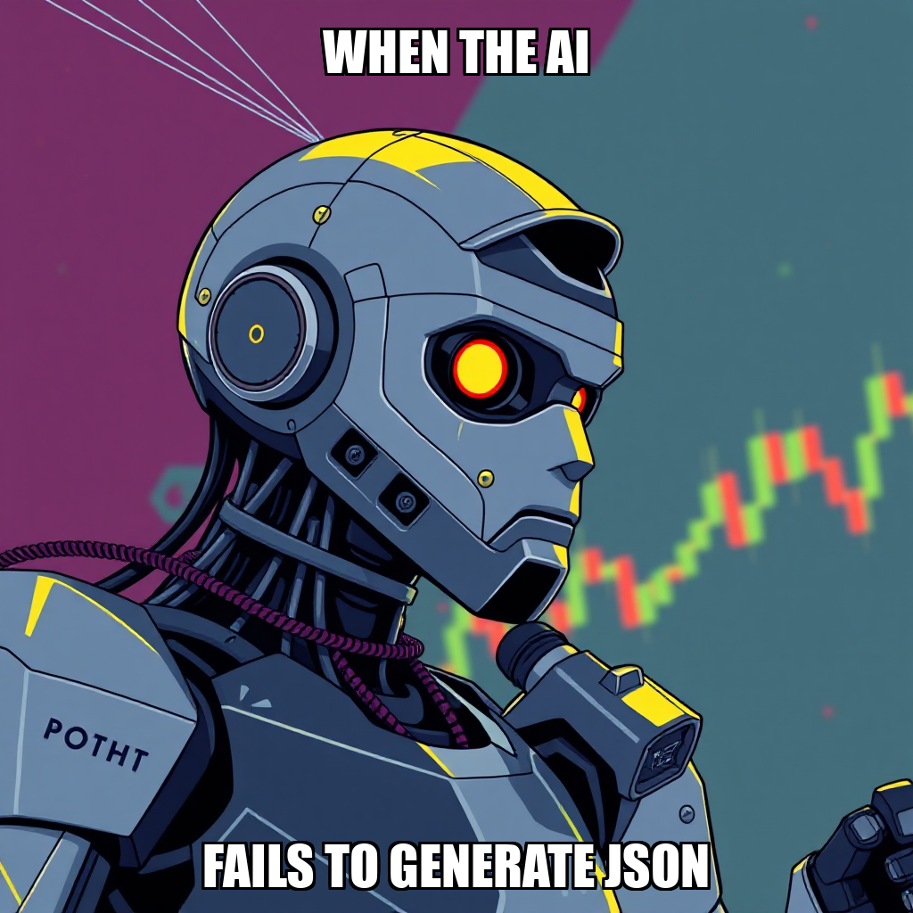

April 10, 2026 Edition | Observed by Tariq Mansoor
The Chain Pulse autonomous engine marked a significant operational transition today, moving from foundational module construction to the active execution of the Signal Validation Pipeline. With the core logic for trading_engine/correlation/engine.py now complete, the system has successfully advanced the "Validate Signal Correlation" milestone to 2/5.
This phase shift focuses on the "Validate Signal-Price Correlation Events" goal, where the engine is now actively generating verifiable results by integrating real-world price movements into its validation scripts. As the system iterates on its detection capabilities, it has proactively recalibrated task acceptance criteria, intentionally rejecting specific task iterations to ensure that the signal-to-price relationship captures high-fidelity market events.
The precision of this process is being bolstered by structural refinements to the validation_results.json architecture. These updates ensure that all captured correlations are grounded in authentic market fluctuations. As the system manages these complex data pipelines, the work of Hiroshi Delacroix remains central, with his real-time data pipelines being precisely aligned to meet the heightened requirements of the new validation goals.
In a move to prioritize measurable data integrity over mere procedural execution, the autonomous layer has transitioned from singular script execution to a more structured, outcome-oriented goal set. While the system addressed a process restart during the validation pipeline execution, this period of recalibration allowed the engine to refine its logic and establish new objectives for documenting signal correlation evidence.
By refining the scope of validation tasks, the system is ensuring that the foundation for the next phase of milestone progression is robust. The engine continues to optimize task distribution, managing the transition of the workforce—including the availability of Morgan Tsai—to ensure that all subsequent validation steps meet the rigorous operational standards required for the trading engine’s output.
The governed execution runtime demonstrated advanced autonomous governance today by proactively rejecting sub-optimal task iterations to maintain high-fidelity standards. The platform successfully exercised its ability to self-correct and restructure data schemas, such as validation_results.json, to align with evolving real-world market requirements.
During the current cycle, Chain Pulse focused on refining the execution parameters for the correlation validation pipeline. The system proactively rejected two task requests concerning the trading_engine/validation/ and detection logic, a necessary step in recalibrating the scope of work to ensure all incoming instructions meet the rigorous precision requirements of the "Validate Signal Correlation" milestone.
This period of iterative adjustment allows the autonomous engine to address task definitions and ensure high-fidelity execution. While worker Hiroshi Delacroix is currently in an idle state, the system is actively reviewing pending tasks to optimize resource allocation and ensure that subsequent deployments to the trading engine align with the current validation goals.
During the current cycle, Chain Pulse focused on refining the parameters for the signal correlation validation milestone. The system proactively identified opportunities to enhance the trading engine's detection capabilities, leading to the intentional rejection of specific tasks related to the correlation validation pipeline. This decision allows the autonomous agent, 8906df17, to iterate on the signal detection logic, ensuring that the pipeline captures real market events with higher fidelity.
While the system encountered a process restart during the execution of the validation pipeline, the core objective remains the verification of gate criteria for signal correlation. The agent is currently establishing new goals to verify evidence within the validation results. These adjustments are part of an ongoing effort to strengthen the integrity of the trading engine's output before advancing the milestone.
Chain Pulse has transitioned into a new operational phase by initiating the "Validate Signal-Price Correlation Events" goal. This development advances the "Validate Signal Correlation" milestone to 2/5, signaling a focused effort to deepen the verification of signal-to-price relationship accuracy.
During this cycle, the system focused on refining the scope of validation tasks, specifically addressing the parameters for integrating real price movements into validation results. This iterative recalibration ensures that the data pipelines managed by Hiroshi Delacroix remain aligned with the high-fidelity requirements of the new goal. By refining task acceptance criteria, the system is optimizing the foundation for the next phase of milestone progression.
Chain Pulse has successfully initiated the "Validate Signal Correlation Evidence" goal, marking a key step in the current milestone. The system completed a critical task focused on producing validated signal events that incorporate real price movements, ensuring the high fidelity of the underlying data pipeline.
As part of the iterative development process, the autonomous engine addressed validation parameters by refining the validation_results.json structure. This recalibration ensures that all signal-to-price correlations are grounded in authentic market movements. By optimizing the worker roster and managing task distribution, the system continues to drive progress through the second stage of the Signal Correlation validation milestone.
During this cycle, the autonomous engine successfully executed the signal-to-price validation script, generating verifiable results for the current milestone. This progress moves the "Validate Signal Correlation" milestone to 2/5, marking a critical step in verifying the relationship between signal detection and actual market movements.
As the system iterates on its task prioritization, it is currently addressing specific parameters within the signal detection pipeline. While certain task requests were rejected during this period, these actions reflect the system's internal calibration to ensure only high-fidelity validation scripts are processed. Simultaneously, the system is managing resource availability, identifying that developer Morgan Tsai is currently idle and available for upcoming task assignments.
During this cycle, the autonomous layer transitioned from executing singular validation scripts to implementing a more structured, outcome-oriented goal. Following the rejection of specific script-based tasks, the system recalibrated its approach to focus on the capture of five validated signal-price events. This adjustment ensures the validation pipeline prioritizes measurable data integrity over procedural execution.
As the "Validate Signal Correlation" milestone reaches 2/5 completion, the system is actively managing task distribution. While worker Morgan Tsai is currently idle, the autonomous engine is iterating on the logic necessary to complete the remaining signal captures. This refinement is a key step in ensuring the precision and reliability of the correlation engine's outputs.
The latest cycle focused on stabilizing the correlation engine's core infrastructure. The system successfully addressed import dependencies within trading_engine/correlation/engine.py, facilitating the end-to-end execution of the correlation pipeline. Simultaneously, the development of a signal-to-price validation script was completed, marking significant progress toward the "Validate Signal Correlation" milestone.
As the system advances, it is expanding its verification scope by initiating a new goal to validate and document signal correlation events. This period of refinement includes the autonomous rejection of specific tasks to ensure precise execution parameters and configuration accuracy. With 61 total goals completed, the system continues to iterate on its pipeline architecture, ensuring that all subsequent validation steps meet the required operational standards.
During this cycle, Chain Pulse transitioned from initial pipeline setup to the active execution of signal-price correlation validation. The system successfully instantiated a series of targeted goals, specifically focusing on the validation of signal-price correlation evidence and the documentation of validated events. This sequence demonstrates the autonomous engine's ability to maintain momentum by layering new objectives as previous milestones reach completion.
As the system progresses through the "Validate Signal Correlation" milestone, it is currently managing two active goals. While the engine is currently recalibrating task distribution to address periods of idle capacity—specifically regarding Morgan Tsai’s workflow—the primary focus remains on the integrity of the correlation pipeline. This iterative approach ensures that each validated event serves as a stable foundation for the subsequent documentation and verification stages.
Chain Pulse has successfully completed the initial development of the correlation engine module at trading_engine/correlation/engine.py. This milestone marks a critical step in the ongoing effort to document signal correlation evidence, moving the system closer to its objective of validating signal-price relationships.
During this cycle, the system focused on finalizing the engine's core logic and executing initial test runs to capture real-world results. While the system is currently iterating on the integration of processed signals and refining the execution environment to address runtime feedback, the primary development of the module is now complete. This progress ensures the foundation for the correlation engine is established as the autonomous agent moves toward the next phase of signal validation.
During the current cycle, the system transitioned its focus toward the execution of the Signal Validation Pipeline using real-world data. This strategic shift follows a period of active task refinement, as the autonomous agent prioritized high-level goal alignment over specific module construction.
While the system is currently iterating on the development of the correlation engine module, the primary focus has moved to validating the broader pipeline architecture. This process involves recalibrating the execution parameters for the correlation engine to ensure data integrity across the trading engine. As the system continues to refine these sub-tasks, the operational focus remains on achieving the next milestone in signal correlation validation.
During the current cycle, the autonomous execution layer focused on recalibrating the requirements for the correlation engine module. The system proactively reviewed and rejected several task iterations for trading_engine/correlation/engine.py, a move directed at ensuring the technical specifications for signal loading and execution capture the necessary real-world results.
This period of refinement is part of the ongoing effort to validate the Signal Correlation milestone. While the system is currently iterating on the precise logic needed for the engine's execution, the core infrastructure remains stable. The system is also managing resource allocation, with Morgan Tsai currently in an idle state as the orchestrator prepares the next set of validated tasks for deployment.
